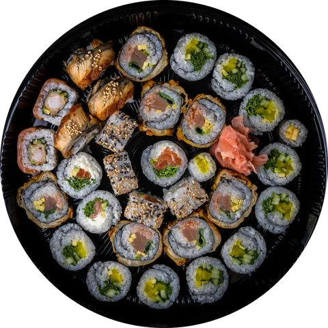
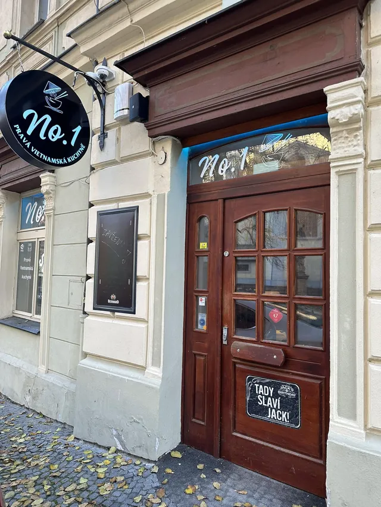
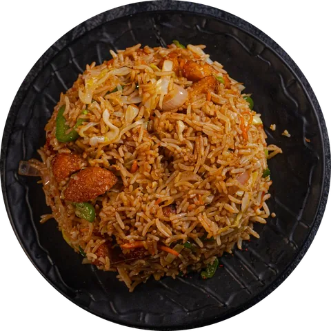

Kostelní náměstí · Litoměřice
Pravá vietnamská kuchyně.
Phở, bún, cơm i sushi. Denně od 11 do 22 hodin — u nás, s sebou nebo domů.
- Rezervace
- 723 384 990
- Dnes
- 11:00–22:00


Proč právě NO.1
Vietnam na talíři. Litoměřice kolem vás.
Vietnamská kuchyně stojí na rovnováze — poctivý vývar, rýžové nudle, koriandr a perila, citron, chilli a arašídy. Každou misku si dochutíte podle sebe.
Najdete nás na Kostelním náměstí, pod klenutým stropem a u zelené stěny s logem z mechu. Přijďte na oběd, na večeři s přáteli, nebo si jídlo odneste domů.
- Otevřeno denně 11:00–22:00
- Jídlo s sebou i rozvoz přes Foodoru
- Bezbariérový vstup, mazlíčci vítáni
- Dárkové poukázky 300, 500 a 1 000 Kč
Galerie
Instagram @no.1_litomerice ↗Co říkají hosté

Máte chuť hned?
Objednejte si NO.1 domů, nebo si zarezervujte stůl.